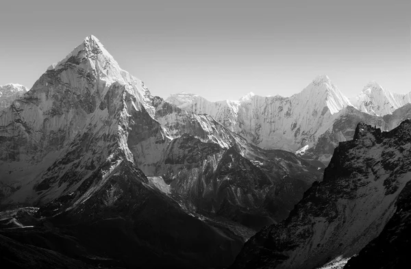

Еверест
«Джомолунгма» у перекладі з тибетської означає «Божественна (qomo) Життя (lung — вітер чи життєва сила) Мати (ma)», названо її на честь бонської богині Шераб Чжаммі. Непальська назва Джомолунгми — «Сагарматха» — означає «Вершина неба». Англійською мовою гору названо Еверестом (англ. Mount Everest) на честь сера Джорджа Евереста (1790—1866 рр.), керівника геодезичної служби Британської Індії в 1830—1843 рр. Цю назву запропонував 1856 року наступник Дж. Евереста — Ендрю Во (англ. Andrew Waugh, 1810—1878 рр.)
Це зробили одночасно з публікацією результатів роботи його співробітника, Р. Сікдара, який 1852 року вперше виміряв висоту «Піка XV» і довів, що він є найвищим у регіоні та, імовірно, в усьому світі.
03.04.2022 Георгієв О.В